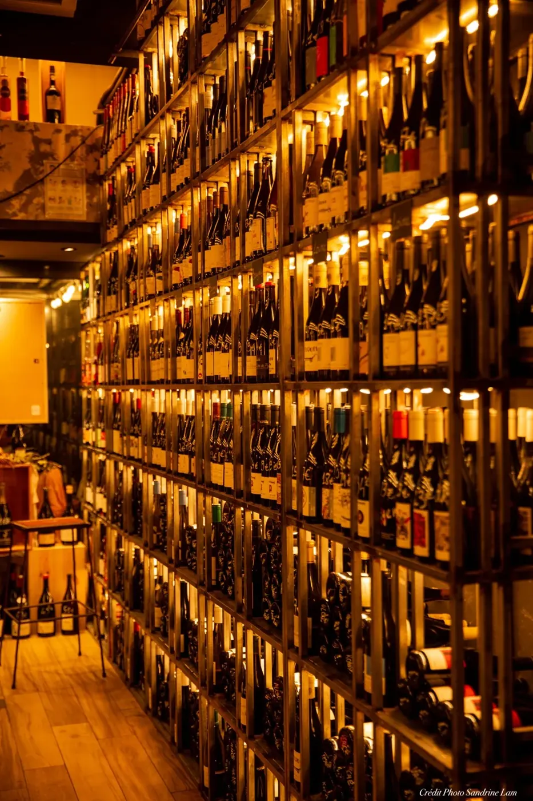
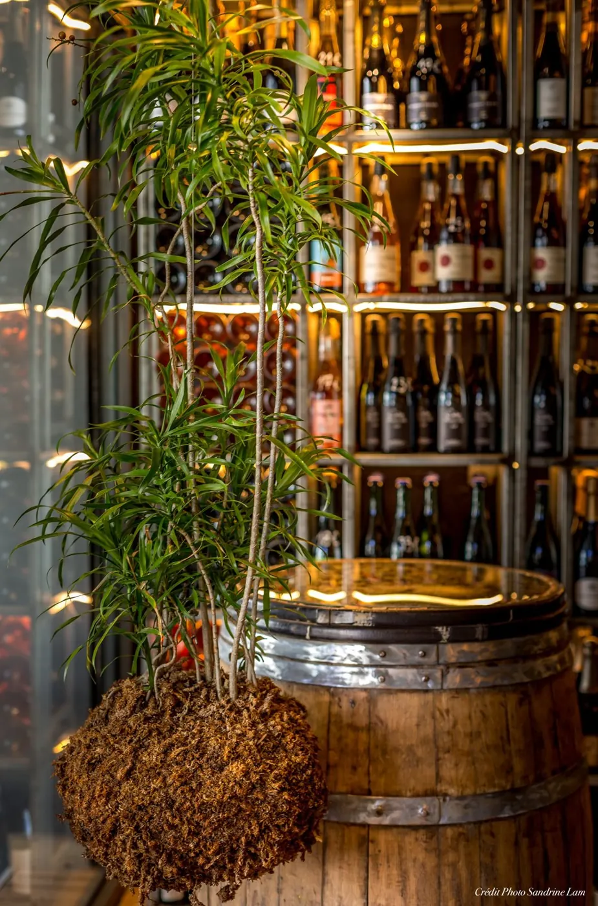
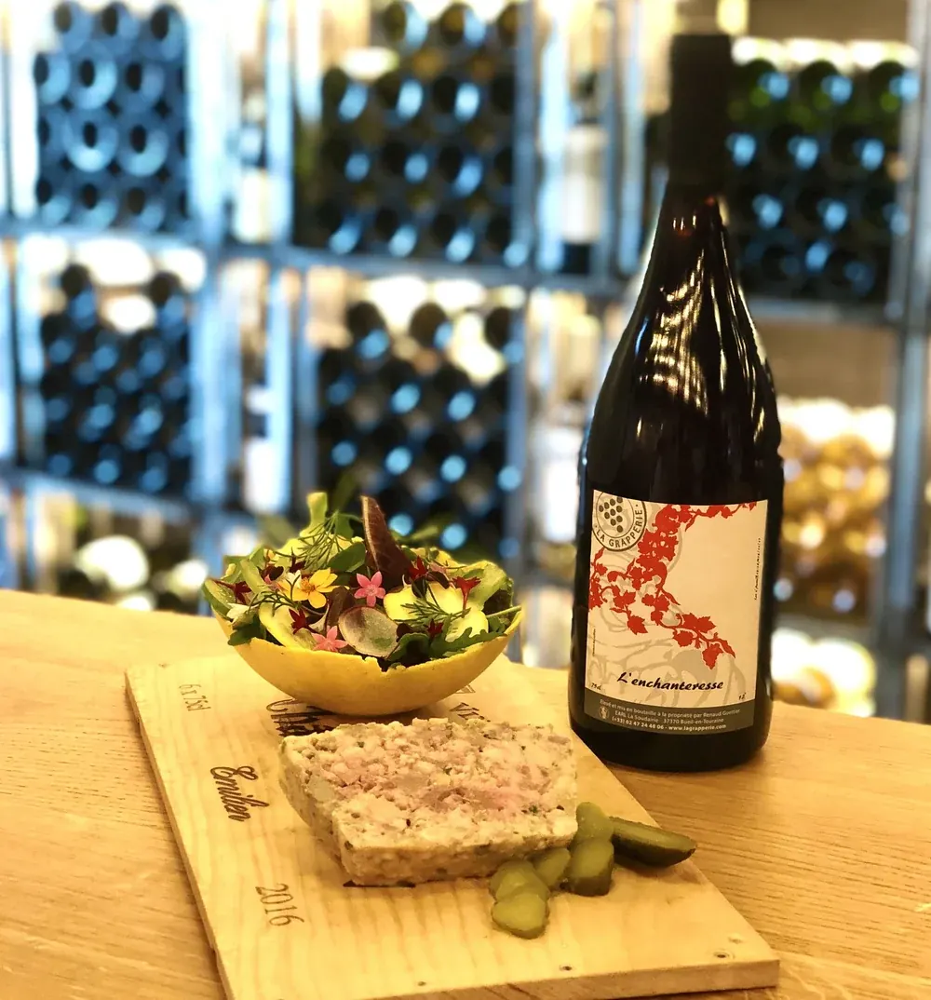
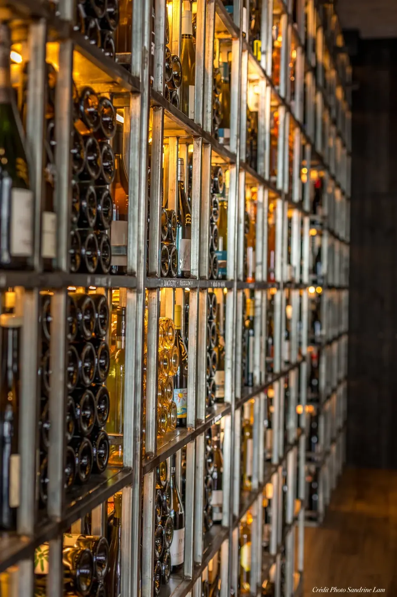
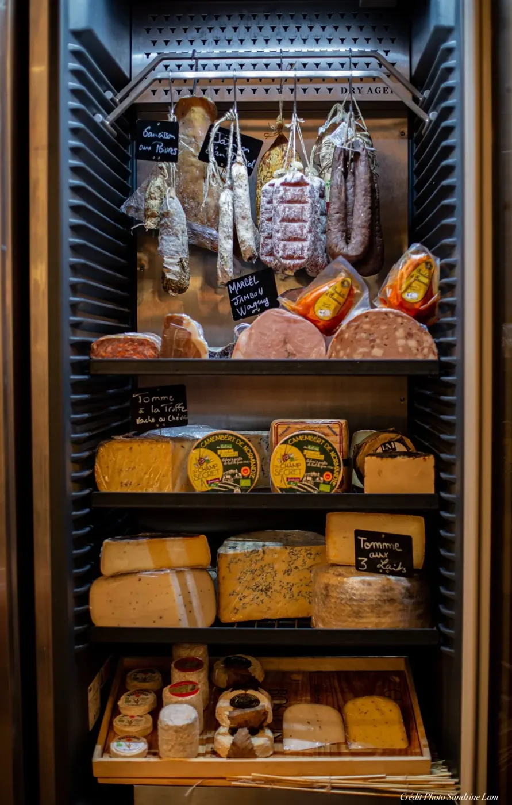
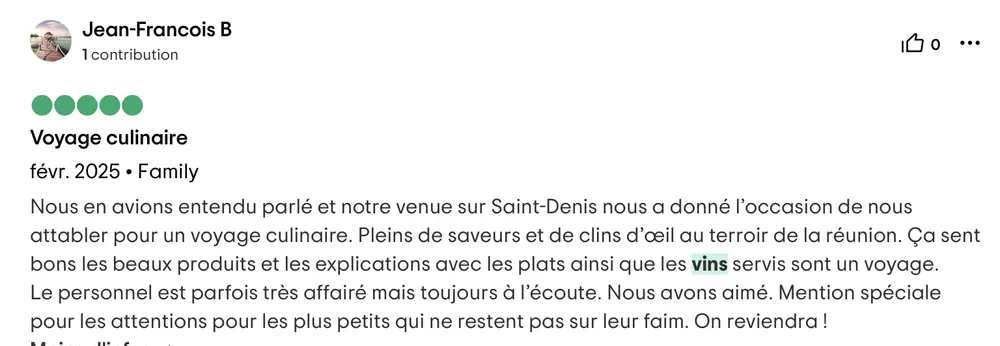
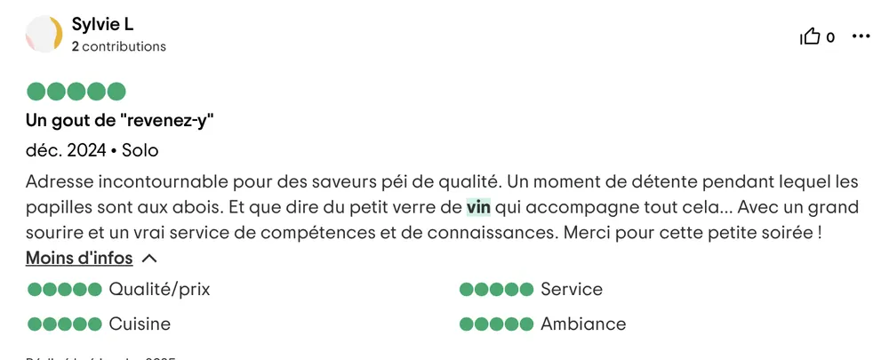
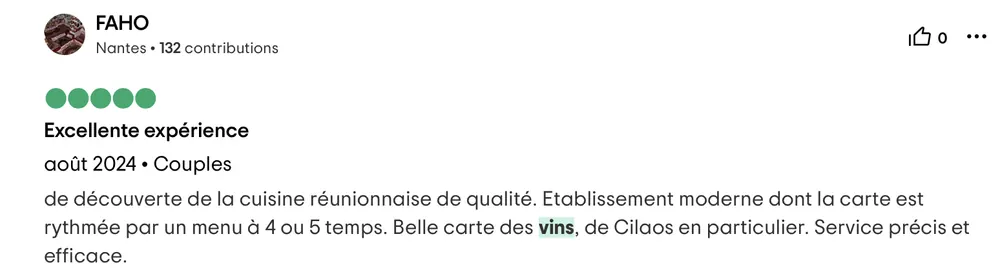
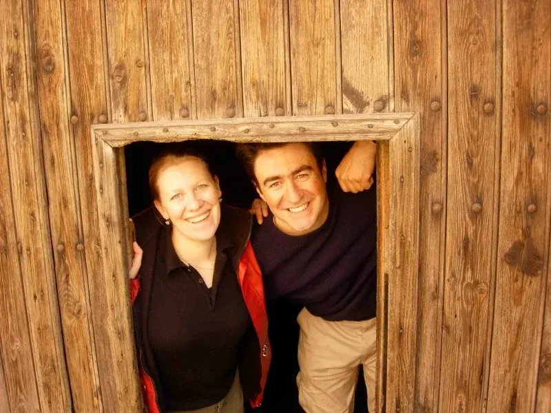
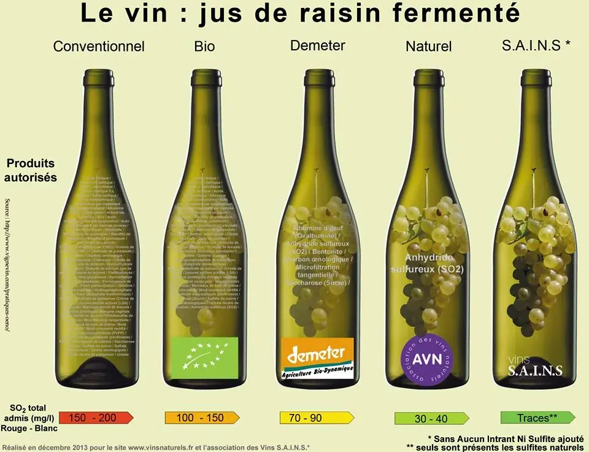

Notre cave à vin
Les Fabricants
Venez découvrir notre sélection de vins naturels et conventionnels dans notre cave à vins Les Fabricants.
Nos cavistes hors-pair ont sélectionné pour vous plus de 400 références. Vins naturels, bio, en biodynamie, pétillants naturels ou plus classiques… Laissez-vous guider par nos sommeliers passionnés.
Un conseil, une dégustation, une initiation ? Nous avons à cœur d'apporter toute notre expertise à votre service. Nous travaillons avec des vignerons de talent respectueux de la nature, du terroir et du consommateur.
Nous avons pensé à tout, car Les Fabricants c'est aussi :
- des charcuteries & fromages triés sur le volet par notre chef Jehan Colson,
- la fromagerie Au Bon Fromage (nouvelle fenêtre) à l'Étang-Salé
- & Maison Legrain (nouvelle fenêtre).





Quelques avis nous concernant



Le bar
BWAR
De Paris à New-York et de Rome à Tokyo, les plus belles tables du monde se tournent désormais vers l'eau micro-filtrée…
L'eau
En micro-filtrant l'eau du réseau, nous vous proposons une eau très neutre tout en conservant les minéraux et les oligo-éléments. Cette eau vous permettra d'apprécier au mieux les saveurs de nos mets et de nos vins.
En consommant notre eau embouteillée sur place, vous vous engagez, à nos côtés, pour l'environnement.
Le vin
Tendance nature, voire S.A.I.N.S. (Sans Adjonction d'Intrants Ni Sulfites).
À l'écoute de la Terre pour la cuisine, nous avons choisi de l'être pour le vin… Les vignerons que nous souhaitons vous faire découvrir respectent leur terroir, préservent la mémoire du sol, donc l'ADN du vin. Ils préfèrent une fermentation naturelle, douce et longue et une vinification sans produit rajouté, avec le moins de SO2 possible ; leurs vins gagnent ainsi en complexité aromatique, en texture en bouche et sont beaucoup plus digestes.

Patricia et Luc Bettoni, dans leur chai (Domaine Les Éminades (nouvelle fenêtre) à Saint-Chinian). Venez les découvrir & laissez-vous guider…
